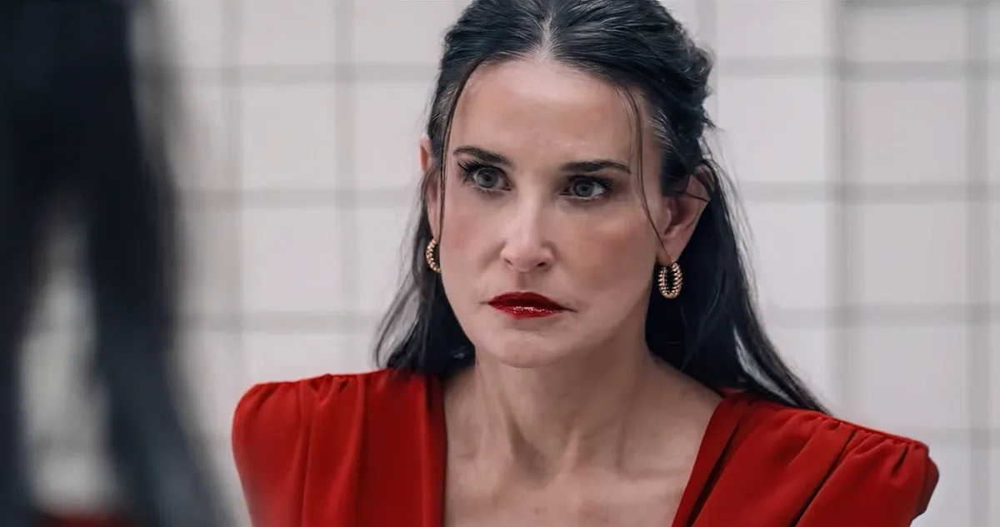
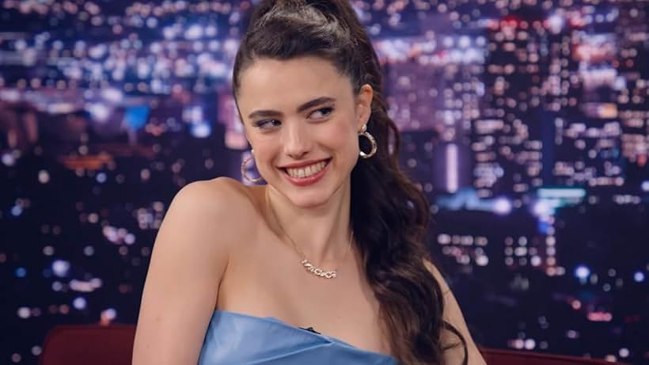
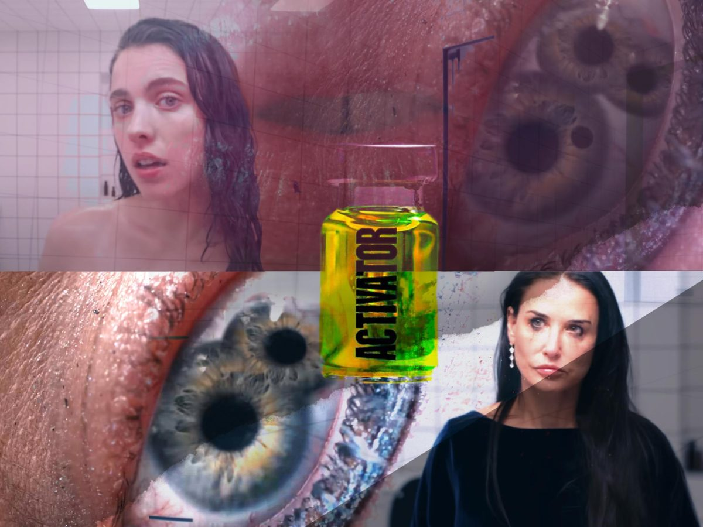

Substance: Review
Amazing body horror movie.
I just wish there was more time to touch up on the little parts of the movie.
I kinda brushed it off since it’s supposed to be a “movie”, but I end up wondering is how the fuck is this substance funded… the people behind it?

It feels like it was done on purpose for us to speculate, but it’s almost like we’re watching a dream simulation of some sort.
Like an actual nightmare. I don’t hate it, but I like to think of it as the possible direction of the movie. I also want to commend the artistic direction of the movie so keep in mind of the spoilers for those reading.

The artistic direction was beautiful.
Everything weird and bizarre added, I loved every single second of it. The transformation of Elizabeth to Sue not only shows the bizarre quality of direction, but the nightmare fuel narrative of the position of women in the entertainment business.
I found myself more in awe as the final reveal of the movie shows a monsterous transformation of various human meat and organs. From what I see, Elizabeth and Sue combined together highlights body dysmorphia to its extreme. Essentially, its body dysmorphia but personified through a bizarre body horror direction.

This movie will be a masterpiece for its bizarre art direction for me, but I wish for some story elements revolving around the "substance" were somewhat explained. I understood the mysterous direction that created this nightmare dream-like storyline, but it would be interesting to see a director's cut version that narratively explains it briefly.


socials